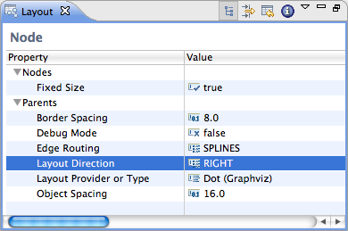
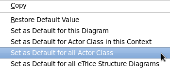

In eTrice the primary source of the models is text based. However, for convenience the structure and the behavior of structure classes can be edited with graphical editors using the standard ROOM notation. Further. the textual models can be structured hierarchically using the import statement.
So jumping between textual models and switching to and between diagrams and back to the textual representation is a frequent task. Therefore in this chapter we want to show the various possibilities to navigate the models.
There are three global key bindings (cf. the eTrice main menu item):
Alt+M – jump to the textual model
Alt+B – jump to the behavior diagram of the current actor class (determined by the cursor or selection position)
Alt+S – jump to the structure of the current structure class (determined by the cursor or selection position)
Jumping from a diagram to the textual model using Alt+M will open (or bring to the front) an editor with the ROOM file and will select the structure class of the diagram in the text.
The other way round, the position of the cursor or selection in the ROOM file is relevant. If it is enclosed by an actor class then for Alt+B a state machine editor is opened. If it is a structure class and Alt+S is pressed then the structure editor is opened for this class.
As an alternative the context menu of an actor class can be used to open the associated structure or behavior diagram.
Switching from the behavior to the structure is performed on Alt+S and vice versa on Alt+B.
Model file paths in import statements are hyper links that can be clicked with the Ctrl key pressed.
An alternative is to use F3 (open declaration) with the cursor inside the file name.
In a similar way references to model elements can be navigated using F3 or Ctrl-Click, e.g. the protocol class of a port or the actor class of an actor reference or the data class of an attribute and many more.
The “quick outline” is a means that allows fast navigation in a single model. Ctrl-O opens a window similar to the outline view. Typing text (with possible wild cards * and ?) filters the view and selecting an element and pressing return locates the element in the editor.
Ctrl-Shift-G searches references to model elements. E.g. “Find references” for a selected actor class lists all locations in ROOM models and diagrams that refer to this actor class.
Using the outline, also imported elements can be browsed and navigated.
The behavior editor displays a hierarchical state machine. States can have a sub state graph and thus the hierarchy of states and state graphs forms a tree like structure. The eTrice behavior editor always shows only one level of the hierarchy. The editor switches to the sub state graph of a state by double clicking it. The path of the currently displayed state graph is indicated in the upper right corner using state names separated by slashes (/). A single slash indicates the top level. Double click into the empty space of a state graph will switch to the state graph one level up.
A double click on a transition (or its label), a transition point or a choice point opens their property dialog. A double click on a state opens its property dialog if it has no sub state graph or it switches to its sub state graph.
The context menu of a structure diagram (invoked in the empty space inside the bounding rectangle) contains an entry “Open Class Behavior” which opens the behavior diagram (same as Alt+B).
The context menu of an actor reference contains entries: “Open Ref Structure” and “Open Ref Behavior” that allow to open the associated diagrams of the referenced actor class.
eTrice Java projects use the Eclipse JDT build to build and deploy an eTrice application.
The eTrice new project wizard requires the org.eclipse.etrice.runtime.java project in the workspace and adds a dependency to it.
If the project uses other eTrice projects (e.g. the org.eclipse.etrice.modellib.java) they have to be added to the Java build path as well.
The eTrice new project wizard creates the following files for the JDT build
a ROOM model file with exemplary classes
a simple physical model
a model mapping the logical entities of the ROOM model to the physical entities
a launch configuration that invokes the eTrice Java code generator for the new models
a launch configuration that launches the main method of the generated code
If “build automatically” is chosen the newly created model can be generated and launched with just two clicks.
eTrice provides as a feature the automatic layout of the ROOM diagrams in its graphical editors. This helps in improving the pragmatics of the diagrams and frees the user from the burden of manually lay-outing the diagrams on the canvas.
The automatic lay-outing has been provided with the help of the well known KIELER framework, which focuses on the pragmatics of model-based system design, which can improve comprehensibility of diagrams, improve development and maintenance time, and improve the analysis of dynamic behavior.
This chapter will answer the following questions
Moreover, some will also be discussed.
Automatic layout could be performed in eTrice graphical editors using the command to layout the current diagram.
This command is available in
The context menu of the diagrams
Using the Ctrl+R L shortcut.
Additionally, an entry in the context menu allows to layout only a selected part of the diagram.
A layout option is a customization point for the layout algorithms, with a specific data type and optionally a default value, used to affect how the active layout algorithm computes concrete coordinates for the graph elements.
User-configurable layout options for a particular diagram object can be viewed and configured through the Layout View.The Layout View can be opened from the context menu of a selected diagram object by clicking the Show Layout View entry.
On opening the layout view, and selecting any layout option, a description of the layout option is available in the footer of eclipse SDK:

The values of the layout options for a particular diagram object (in the visible diagram) can be changed using the Layout View of that diagram object. The initial values are the predefined default values. These defaults can be changed using the context menu in Layout View as well as the Layout preference pages provided by eTrice.

The Layout view allows flexible customization of layout options for the selected objects in the eTrice diagram. If no object is selected, the view shows the options for the top-level container of the diagram. Options are stored persistently in diagram file (*.structure file /* .behavior file) of the eTricediagram, so that they are still available after the next Eclipse restart. Of course this requires the diagram to be saved after an option was changed.
The options are grouped according to the function of the selected objects. The group Nodes (respectively Edges, Ports, or Labels) contains options related to the object itself, such as its size or priority, while the group Parents contains options for the elements contained in the selected objects, such as the applied layout algorithm or the spacing between elements. Which layout options are displayed depends on the types of selected objects and the active layout algorithm, since each algorithm supports only a subset of the available options. Furthermore, some options are only visible if the Show Advanced Properties button in the view toolbar is activated. The group types can be hidden using the Show Categories button.
An option can be changed by selecting or entering a new value in the corresponding cell of the Value column.
The most important option is Layout Algorithm, which is used to determine the layout algorithm for the contents of the selected element. Here either a specific layout algorithm or a layout type can be chosen; in the latter case, the most suitable layout algorithm of the given type is taken. By changing the active layout algorithm, the content of the layout view is updated to display only those options that are supported by the new layout algorithm.
Selecting Restore Default Value in the context menu or the view toolbar removes any value for the currently selected option that is stored in the current model file, thus resetting the option to its default value. The view menu has an entry Remove all Layout Options which resets all options of the current model by removing persistent data in the model file.

The context menu for a specific layout option has different alternatives to set the currently active value as default value:
Set as Default for this Diagram: Changes the open diagram file so that the same value is applied to all similar objects (edit parts) of that diagram.
Set as Default for … in this Context: Applies the value to all similar objects that are displayed with the any of the eTrice editors (the option is linked to the edit part class of the selected object).
Set as Default for all …: Links the option value with the domain model element or the diagram type of the selected object (see the context menu depicted above).
These four alternatives have different priorities: if present, the default value for the current diagram is taken first, then the default value for the edit part is checked, then the default value for the domain model element, and then the default value for the diagram type.
Tips:
The information button of the view toolbar can be used to display some useful details on the current selection, such as the edit part and domain model classes.
Default values for layout options can most easily be manipulated based on the eTrice domain model elements.
The user-defined default values for layout options can also be set using the preference pages provided in eTrice. Three preference pages have been provided for this purpose
Layout: for general preferences regarding layout
Behavior: for setting default values of layout options for eTrice behavior diagrams
Structure: for setting default values of layout options for eTrice structure diagrams
These preference pages can be accessed via Windows > Preferences > eTrice > Layout.
Note that the contents of these preference pages are in sync with the KIELER > Layout preference page provided by the KIELER. Relevant entries in the KIELER > Layout page are shown in the above preference pages.
The Layout preference page is meant to configure general options regarding the layout.
If Set routing style of all edges to oblique is active, all routing styles and smoothness settings of edges are removed when automatic layout is performed. Since most layouters compute the routing of edges as part of their algorithm, these styles usually do not yield the expected results.
The Behavior and Structure sub-preference pages help in setting up the default values of layout options in behavior and structure diagrams respectively.
The Default Layout Option Values table is used to manage the default setting for layout options, which can also be modified with the context menu of the layout view (see above). All user-defined settings are displayed here, and the buttons on the right of the table serve to create, edit, and remove entries. The Type column shows the type of element the option is linked with: either edit part, model element, or diagram type. The Element column shows the class name for options that relate to edit parts or domain model elements, and the diagram type name for options that relate to diagram types. Option is the name of the layout option, and Value is the currently set value of the option.
Creating a new entry requires the selection of the type of related element and entering its class name or identifier. Class names of edit parts can be explored using the information button of the layout view, while the class names for the domain model elements and the diagram type identifiers for the diagram types can be selected with the Browse button. After that, a layout option has to be selected from the list using the corresponding Browse button. Hitting OK creates an entry, and its value can then be set using the Edit button.

Note that the Behavior preference page will show only those entries which hold for the behavior diagrams. Moreover, it will allow setting default values of layout options for only those domain model elements and diagram types which could be present in the behavior editor diagrams. Similar thing holds for the Structure preference page.
While most layout options are used to affect how the active layout algorithm computes concrete coordinates for the graph elements, there are some layout options that have a special role.
The option with identifier de.cau.cs.kieler.algorithm specifies which layout algorithm to use for the content of a composite node. The value can be either the identifier of a layout algorithm or the identifier of a layout type. In the latter case the algorithm with highest priority of that type is applied.
For the purpose of automatic diagram layout in eTrice, we use the Layered algorithms which are meant for lay-outing hierarchical diagrams and are best suited for behavior and structure diagrams in eTrice. For the behavior diagrams we have used the Graphviz Dot algorithm whereas for the structure diagrams we have used the KLay Layered algorithm. Though the layout algorithm being used for performing layout can be changed at ones own will, it is recommended to use the defaults.
Diagram types are used to classify graphical diagrams for setting default layout option values for a set of similar diagrams. The diagram type of an element is specified with the layout option de.cau.cs.kieler.diagramType. Thus, these help in
The following diagram types have been defined and used in eTrice:
General - This type is automatically assigned to all diagrams for which no specific type is declared. (Predefined in KIELER)
eTrice Behavior Diagrams - This type has been assigned to the diagram objects in eTrice Behavior Diagrams.
eTrice Structure Diagrams - This type has been assigned to the diagram objects in eTrice Structure Diagrams.
Note that not all diagrams objects in the behavior and structure diagrams are assigned the last two diagram types. Only the top-level container and the visible bounding box has been assigned these diagram types in respective editors.
Most parts of the above documentation have been taken from the “KIML wiki” (http://rtsys.informatik.uni-kiel.de/confluence/pages/viewpage.action?pageId=328078 and have been modified for automatic layout in eTrice. A more detailed description about the layout algorithms, predefined diagram types and the internal structure of KIELER Infrastructure for Meta-Layout (KIML) can be found there.
In eTrice it is possible to use annotations similar to Java annotations. Annotation types can be defined together with their targets and other properties and later they can be used.
Annotations can be processed by the code generator to influence its behavior.
Examples of such definitions can be found in the files Annotations.room which are part of the modellibs. They contain definitions of annotations that are recognized by the generator of the associated language.
Consider e.g. the annotations definitions for Java
Here we find two definitions. The meaning of those annotations will be explained later in section Usage and Effect of the Pre-defined Annotations.
The annotation type definition defines a target where the annotation is allowed to be used. This can be one of
Attributes can be added as needed and qualified as mandatory or optional. Attributes have a type (similar as the PrimitiveType but with the understanding that ptChar is a string). Another attribute type is enum with an explicit list of allowed enum literals.
The eTrice generators currently implement two annotations.
This annotation has no attribute. If specified the code generator won’t generate a state machine but part of the interface and methods of an actor class.
Java
An abstract base class Abstract<ActorClassName> is generated which contains ports, SAPs and attributes as members. The receiveEvent() method is dispatching to distinct methods per pair of interface item (port or SAP) and message coming in from this interface item. The user has to sub class the abstract base class and may override the generated methods as needed.
C
The generator is only generating a public header file and is leaving its implementation to the user.
This annotation is defined for Java only. It tells the generator that the generated actor class should inherit from the specified base class (mandatory string parameters class and package).
If the actor class is modeled as having another actor base class then the annotation has no effect.
Another top level type that eTrice introduces is the Enumeration. Enumerations are well known from many programming languages. They basically are a lists of literals, each of which is a pair consisting of a name and an integer constant.
The assignment of integer constants is optional in eTrice. If no value is specified then the value is that of the predecessor plus one or 0 if there is no predecessor.
The default type of the enumeration is an int and depends on the target platform. But it is also possible to explicitly associate a PrimitiveType (of integer type of course) with the enumeration.
In the following listing we show a couple of examples for enumerations.
eTrice comprises several models:
the ROOM model (*.room) – defines model classes and the logical structure of the model
the Config model (*.config) – defines configuration values for attributes
the Physical model (*.etphys) – defines the structure and properties of the physical system
the Mapping model (*.etmap) – defines a mapping from logical elements to physical elements
In the following diagram the models and their relations are depicted. The meaning of the arrows is: uses/references.

In the following sections we will describe those models with emphasis of their cross relations.
The ROOM model defines DataClasses, ProtocolClasses, ActorClasses, SubSystemClasses and LogicalSystems. Thereby the three latter form a hierarchy. The LogicalSystem is the top level element of the structure. It contains references to SubSystemClass elements. The SubSystemClass in turn contains references to ActorClass elements which again contain (recursively) references to ActorClass elements. The complete structural hierarchy implies a tree which has the LogicalSystem as root and where each reference stands for a new node with possibly further branches.
Let’s consider a simple example. It doesn’t implement anything meaningful and completely omits behavioral and other aspects.
When a LogicalSystem is instantiated then recursively all of the contained referenced elements are instantiated as instances of the corresponding class. Thus the instance tree of the above example looks like in figure below (the third line in the white boxes shows some mapping information, see MappingModel ):

Once we have the ROOM class model we can configure values using the Config model. This can be done on the class level and/or on the instance level. Values defined for class attributes are used for all instances unless there is an instance value configured for the same attribute.
The physical model defines the physical resources onto which the logical system will be deployed. It is possible to define runtime classes which (currently) only define the overall execution model of the platform.
The PhysicalSystem is composed of NodeReferences which are instances of NodeClasses. Each NodeClass is referencing a RuntimeClass and is defining Threads.
The last model finally combines all this information by mapping logical to physical entities.
The result of the mapping is also depicted in above instance tree diagram of the instances. All actor instances (the white boxes) are mapped to a node and a thread running on this node (shown as @*node* : thread).
An interface contract defines the behavioral semantics of an interface. In many languages like Java or C++ this is usually described in form of text comments. Textual descriptions are informal and have a vague expressiveness for complex behavior. Also it is difficult to leverage them for tooling or analysis.
eTrice provides a formal description for interface protocols. This is shown by the example of PLoginProtocol. It is a stateful protocol that defines the login procedure of an ATM client and the ATM server back-end.
ProtocolClass PLoginProtocol {
incoming {
Message hello()
Message login(int16)
Message cancel()
}
outgoing {
Message hello()
Message wrong()
Message attemptsLimitReached()
Message ok()
}
}

The implementing parties for this protocol must obey strict rules due security and compatibility reasons. For example, the client must initiate any interaction by sending the message hello. The server must then response in turn by hello. After that the client can login with an ID, which can be wrong (maximum 3 times) or ok. Also there are rules for cancel or attemptsLimitReached and the restart.
In eTrice, these semantics can be expressed using a state machine. The full contract for PLoginProtocol is shown in the screenshot below.
The contract is defined using a regular state machine, which requires first an ActorClass. This actor must be annotated with @InterfaceContractDefinition including the attribute protocol to specify the interface protocol. Further, the actor must implement a pair of regular and conjugated ports of the protocol. These two ports represent the two implementing parties of the protocol. After that, the contract can be created as the behavior of the actor. Be reminded, that the state machine does not represent an implementation, but the valid interaction for the protocol.
ActorClass LoginProtocolContract {
@InterfaceContractDefinition(protocol = "PLoginProtocol")
Interface {
conjugated Port serverPort: PLoginProtocol
Port loginPort: PLoginProtocol
}
Structure {
external Port serverPort
external Port loginPort
}
Behavior {
StateMachine {
// the contract state machine goes here
// see diagram above
}
}
In addition the protocol can be annotated with @InterfaceContract to reference the contract. This is for documentation purpose or future static analysis.
ProtocolClass PLoginProtocol {
@InterfaceContract(definedBy = "LoginProtocolContract")
// ...
}
Both annotation can be found in the modellib under the namespace etrice.api.contracts.definitions.
It is possible to generate a monitor, that can check the contract at runtime. The generator transforms any contract to an ActorClass, which can be placed between the implementing parties to detect any violation of the contract.

The generator is called “eTrice Contract Monitor Generator”. The usage is similar to the eTrice source code generators. By default the generated models are placed in the folder ‘model-gen’. The name of the generated ActorClass can be adjusted in the contract annotation @InterfaceContractDefinition using the attribute generatedMontiorName.
The generated monitor implements PContractMonitorControl, which can be used to query the violations status or to toggle the propagation of invalid messages. It can be found in the modellib under the namespace etrice.api.contracts.monitors.
In eTrice the protocol etrice.api.interrupt.PInterrupt models an interrupt event. The protocol consists of two messages fire and event, which have higher priority than other eTrice messages.
The flow of an interrupt event is as follows. First, the interrupt handler must create the eTrice message PInterrupt.fire. As soon as the execution returns to the eTrice thread, the eTrice runtime dispatches the PInterrupt.event message immediately before any other queued message. As a result, the interrupt event message will be received by the target state machine at once. The execution is always on the eTrice thread to avoid any concurrency issues from the interrupt context.
The following examples shows how to connect an interrupt handler to the eTrice application.
First there is the simple actor AExternalUSBIsr, which exports the PInterrupt conjugated port to an external function called USB_register_port.
import etrice.api.interrupt.PInterrupt
ActorClass AExternalUSBIsr {
Interface {
conjugated Port isrUSBExported: PInterrupt
}
Structure {
external Port isrUSBExported
}
Behavior {
StateMachine {
State state
Transition init: initial -> state {
action '''
// export port isrUSBExported to external function
USB_register_port(isrUSBExported.export());
'''
}
}
}
}
The function USB_register_port saves the port handle to usbIsr_port. The interrupt handler can use this handle to trigger the fire message from its interrupt context.
// #include "etrice/api/interrupt/PInterrupt.h"
static PInterruptConjPort *usbIsr_port = NULL;
// called from eTrice initial transition
void USB_register_port(PInterruptConjPort *port) {
usbIsr_port = port;
}
// !! interrupt context !!
void MY_USB_INTERRUPT_HANDLER() {
if(usbIsr_port) {
PInterruptConjPort_fire(usbIsr_port);
}
}
The event is handled in actor AUSBService, which contains the previous actor AExternalUSBIsr. The port usbIsr is bound to AExternalUSBIsr.externalUsbIsr. If the interrupt handler triggers the fire message, the state machine will finally receive the associated event message on port usbIsr.
ActorClass AUSBService {
Structure {
Port usbIsr: PInterrupt
ActorRef externalUsbIsr: AExternalUSBIsr
Binding usbIsr and externalUsbIsr.isrUSBExported
}
Behavior {
StateMachine {
State state
Transition init: initial -> state
Transition receiveUSB: state -> state {
triggers {
<event: usbIsr>
}
action '''
// do something, e.g. read usb buffer
'''
}
}
}
}